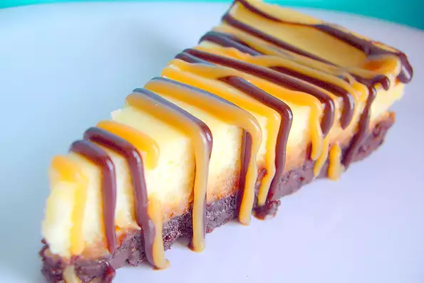

>
Cheesecake Brownie Caramel
Cheesecake Brownie Caramel

Ingredients
- 1 (9 ounce) package brownie mix
- 1 egg
- 1 tablespoon cold water
- 1 (14 ounce) package individually wrapped caramels, unwrapped
- 1 (5 ounce) can evaporated milk
- 2 (8 ounce) packages cream cheese, softened
- ½ cup white sugar
- 1 teaspoon vanilla extract
- 2 eggs
- 1 cup chocolate fudge topping
Directions
-
Preheat oven to 350 degrees F (175 degrees C). Grease the bottom of
a 9 inch springform pan.
-
In a small bowl, mix together brownie mix, 1 egg and water. Spread
into
the greased pan. Bake for 25 minutes.
-
Melt the caramels with the evaporated milk over low heat in a heavy
saucepan. Stir often, and heat until mixture has a smooth
consistency.
Reserve 1/3 cup of this caramel mixture, and pour the remainder over
the
warm, baked brownie crust.
-
In a large bowl, beat the cream cheese, sugar and vanilla with an
electric mixer until smooth. Add eggs one at a time, beating well
after
each addition. Pour cream cheese mixture over caramel mixture.
-
Bake cheesecake for 40 minutes. Chill in pan. When cake is thoroughly
chilled, loosen by running a knife around the edge, and then remove
the
rim of the pan. Heat reserved caramel mixture, and spoon over
cheesecake. Drizzle with the chocolate topping.
Nutrition Facts
Per Serving: 512 calories; protein 8.2g; carbohydrates 68.9g;
fat 24.1g; cholesterol 93.2mg; sodium 354.9mg.
Return to Main Page